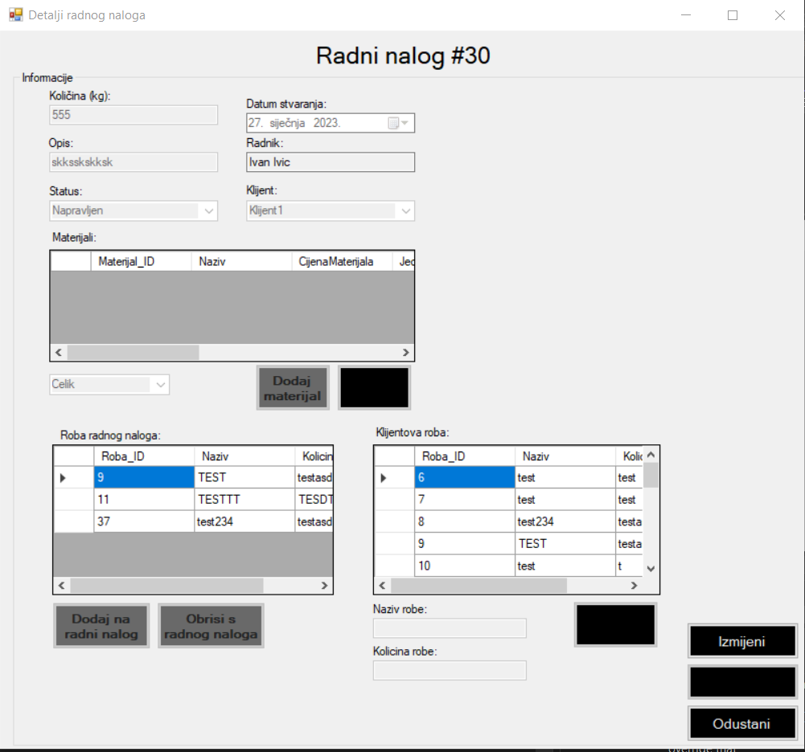

Ovo je forma koja prikazuje detalje radnog naloga. Ovaj prozor služi tome da pogledate informacije o nekom radnom nalogu te možete neke informacije i izmijeniti. Odmah kada se otvori prozor možete vidjeti sve informacije o radnom nalogu kojeg ste izabrali otvoriti. Dodatno, sve informacije su samo za čitanje sve dok ne stisnete na gumb "Izmijeni" koji onda omogućava da promijenite neke informacije. Ovdje također možete dodati robu klijenta kao što se mogli i u formu za izdavanje novog radnog naloga te generirati QR kod ako ga trebate skenirati. Izmijenjene informacije spremate klikom na gumb "Spremi", a ako želite odbaciti promjene ili se samo vratiti na prethodni prozor, kliknite na gumb "Odustani".
